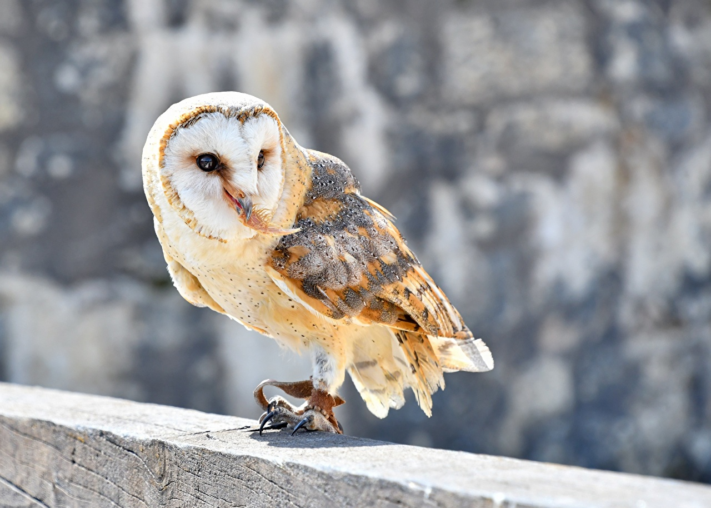

Los estringiformes
LOS ESTRIGIFORMES

Las rapaces nocturnas o estrigiformes (Strigiformes) son un orden de aves compuesto por la familias Tytonidae (lechuzas),
y la familia Strigidae que incluye búhos, mochuelos, tecolotes, autillos, cárabos, el ñacurutú y el chuncho, entre otras.
Se encuentran en todo el mundo, excepto en la Antártida, la mayor parte de Groenlandia y en algunas islas remotas.
Son grandes cazadores, de hábitos generalmente nocturnos y solitarios. Se alimentan principalmente de pequeños mamíferos, insectos
y otras aves, aunque algunas especies se especializan en la pesca. Este vocablo en su etimología viene del latín strix o striigis, y
del griego στριγξ (strinx) o στριγιγγος (striningos), que significa "lechuza", y por ello el nombre de este orden significa «los que
tienen forma de lechuza o búho».